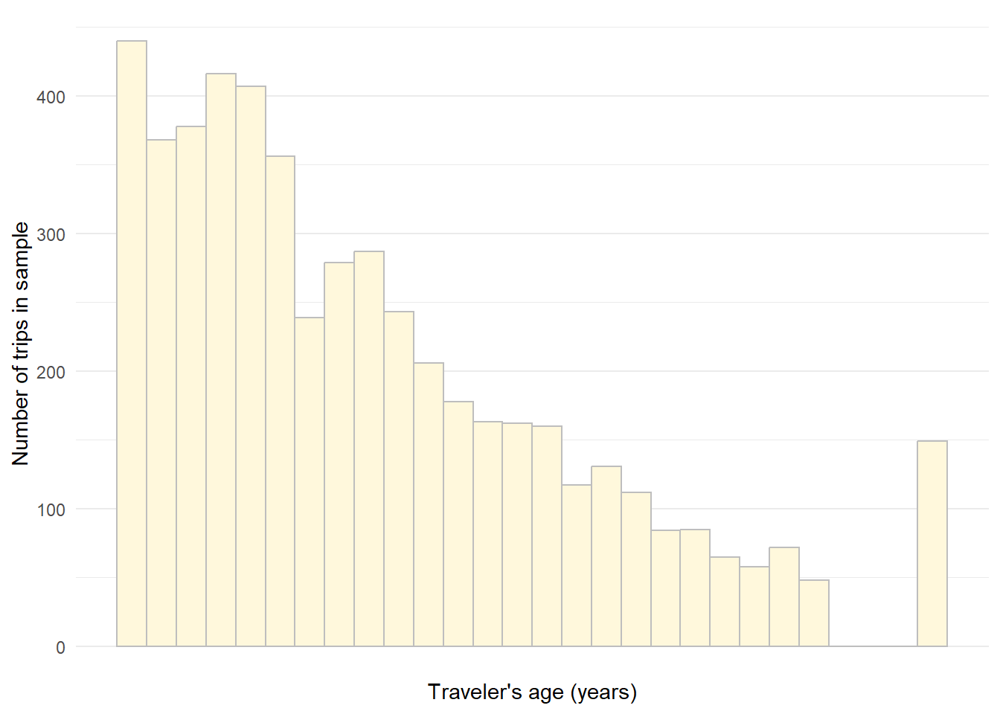

library(tidyverse)
library(here)
library(knitr)
library(srvyr)
library(tidycensus)
library(jtools)P5: Mode Choice
The purpose of this assignment is for you to get some experience estimating and interpreting a logistic regression model. You will use data from the 2017 National Household Travel Survey to predict the likelihood that a short trip (less than 1.5 miles) for a particular trip purpose and/or by a particular population will take place by walking.
In Assignment P2, You got some experience with discrete choice models for choices with more than two options. Logistic regression is appropriate (and simpler) when you are modeling a choice that has only two options.
Load libraries
This analysis uses the following packages:
Load dataset
This will be an analysis of trip-level data from the National Household Travel Survey. You will have already downloaded this data as part of assignment P2.
trips <- here("data",
"NHTS",
"trippub.csv") |>
read_csv(show_col_types = FALSE)I’m also going to include some person-level data, so I’ll load that dataset as well.
people <- here("data",
"NHTS",
"perpub.csv") |>
read_csv(show_col_types = FALSE)Filter sample
I will be filtering my data by trip purpose, by population, and by trip distance. For your own assignment, you do not need to filter by both trip purpose and population. You might choose one or the other.
Filter for selected trip purpose
The trip purpose is defined by the WHYTO and WHYFROM variables. For this example, I am going to focus on whether people walk to or from visits with friends and relatives (WHYTO or WHYFROM is 17).
visit_trips <- trips |>
filter(WHYTO == "17" |
WHYFROM == "17")Filter for selected population
Any number of variables might define your population of interest. Many of these are include in the trips file, but you might find (or construct) additional values from other files (for example, to identify people in households that own electric vehicles, you’d need to join data from the vehicles file).
I am going to focus my analysis on people who are 65 years old or older.
sr_visit_trips <- visit_trips |>
filter(R_AGE > 64)Filter for trip distance
I want to identify trip that could conceivably be considered to be withing walking distance, which I’ll define as being less than a mile and a half.
short_sr_visit_trips <- sr_visit_trips |>
filter(TRPMILAD < 1.5)
nrow(short_sr_visit_trips)[1] 5206This leaves me with a sample of 5,206 trips.
Generate outcome variable
I want to predict the likelihood that a given trip will take place by walking (TRPTRANS is 01). I’ll create a true/false variable for whether each trip is a walk trip.
short_sr_visit_trips <- short_sr_visit_trips |>
mutate(walk = TRPTRANS == "01")And I can do a quick check to see what share of the trips in my sample are walk trips.
short_sr_visit_trips |>
mutate(Mode = factor(ifelse(walk, "Walk", "Other mode"),
levels = c("Walk", "Other mode"))) |>
group_by(Mode) |>
summarise(`Number of trips` = n()) |>
mutate(`Percent of trips` =
paste0(round(100*`Number of trips`/sum(`Number of trips`)), "%")) |>
kable()| Mode | Number of trips | Percent of trips |
|---|---|---|
| Walk | 1611 | 31% |
| Other mode | 3595 | 69% |
I can also incorporate survey weights to estimate what share of the full population of trips short trips to visit friends and relatives by older adults take place by walking.
short_sr_visit_trips |>
as_survey_design(weights = WTTRDFIN) |>
mutate(Mode = factor(ifelse(walk, "Walk", "Other mode"),
levels = c("Walk", "Other mode"))) |>
group_by(Mode) |>
survey_tally(vartype = "ci") |>
mutate(`Estimated percent of trips` =
paste0(round(100*n/sum(n)),"%"),
`Lower estimate (95% confidence)` =
paste0(round(100*n_low/sum(n)),"%"),
`Upper estimate (95% confidence)` =
paste0(round(100*n_upp/sum(n)),"%")) |>
select(Mode,
`Estimated percent of trips`,
`Lower estimate (95% confidence)`,
`Upper estimate (95% confidence)`) |>
kable()| Mode | Estimated percent of trips | Lower estimate (95% confidence) | Upper estimate (95% confidence) |
|---|---|---|---|
| Walk | 33% | 29% | 36% |
| Other mode | 67% | 62% | 72% |
So it looks like about a third of all trips under a mile and a half that seniors make to visit friends and relatives are walk trips.
Choose predictor variables
I’m going to predict the likelihood of a trip taking place by walking based on the following predictors:
Distance (TRPMILES)
Age (R_AGE)
Disability status (MEDCOND)
Population density in the census block group of the trip destination (DBPPOPDN)
Gender (R_SEX)
Household income (HHFAMINC)
Vehicle availability (whether HHVEHCNT is greater than zero)
Most of these are already available in the dataset, and I just need to filter out the missing values. I will need to construct a value for income and vehicle availability.
Distance
Let’s look at the distribution of trip distances.
ggplot(short_sr_visit_trips) +
geom_histogram(aes(x = TRPMILES),
color = "gray",
fill = "cornsilk",
bins = 40) +
scale_x_continuous(name = "Trip distance (miles)") +
scale_y_continuous(name = "Number of trips in sample") +
theme_minimal()Missing values for distance are coded as -9, so I’ll filter out negative numbers
sample_trips <- short_sr_visit_trips |>
filter(TRPMILES >=0)
ggplot(sample_trips) +
geom_histogram(aes(x = TRPMILES),
color = "gray",
fill = "cornsilk",
binwidth = 0.1) +
scale_x_continuous(name = "Trip distance (miles)",
breaks = seq(0, 1.5, by=0.1)) +
scale_y_continuous(name = "Number of trips in sample") +
theme_minimal()Age
Let’s look at the distribution of ages within our sample. Note that the age of everyone older than 88 is recorded as being 92. Something to be aware of.
ggplot(sample_trips) +
geom_histogram(aes(x = R_AGE),
color = "gray",
fill = "cornsilk",
binwidth = 1) +
scale_x_continuous(name = "Traveler's age (years)",
breaks = seq(0, 1.5, by=0.1)) +
scale_y_continuous(name = "Number of trips in sample") +
theme_minimal()
Disability
This is the answer to the question “Does this person have a condition or disability that makes it difficult to travel outside the home?” where a value of “01” means yes. We’ll set this up as a logical (binary) variable.
This variable is only in the person file, so we’ll need to join that data to the trips file.
disability_data <- people |>
select(HOUSEID, PERSONID, MEDCOND)
sample_trips <- sample_trips |>
left_join(disability_data) |>
mutate(disability = MEDCOND == "01")
sample_trips |>
group_by(disability) |>
summarise(`Number of trips` = n()) |>
mutate(`Percent of trips` =
paste0(round(100*`Number of trips`/sum(`Number of trips`)), "%")) |>
kable()| disability | Number of trips | Percent of trips |
|---|---|---|
| FALSE | 4567 | 88% |
| TRUE | 636 | 12% |
About twelve percent of trips in our sample are by people with a disability that impacts their mobility.
Density
Densities are coded as categories, with a -9 to indicate missing values, so we’ll filter those out.
Let’s look at the distribution of population densities at the trip destinations.
sample_trips <- sample_trips |>
filter(DBPPOPDN > 0)
density_values <- c(50, 300, 750, 1500, 3000, 7000, 17000, 30000)
ggplot(sample_trips) +
geom_histogram(aes(x = DBPPOPDN),
color = "gray",
fill = "cornsilk",
bins = 30) +
scale_x_continuous(breaks = density_values,
labels = density_values,
transform = "log",
name = paste0("Population density of destination\n",
"block group (people per sq-mi)")) +
scale_y_continuous(name = "Number of trips in sample") +
theme_minimal()Gender
Let’s look at the gender values in our sample data.
sample_trips |>
group_by(R_SEX) |>
summarise(`Number of trips` = n())# A tibble: 3 × 2
R_SEX `Number of trips`
<chr> <int>
1 -7 1
2 01 2240
3 02 2955Once again, negative values represent missing data. There was one trip by a person who declined to answer the question about their gender. We’ll remove this trip from the data set and recode the variable as a true/false indicator for whether the trip is by a woman.
sample_trips <- sample_trips |>
filter(R_SEX != "-7") |>
mutate(female = R_SEX == "02")Income
The HHFAMINC variable reports income in categories. We can recode these as a continuous variable. One approach is to use the midpoint of each category. There is no midpoint for the highest income category (greater than $200,000), so you’d need to choose an arbitrary value for that top category.
You could also use census microdata to find the median household income for seniors in each of those income categories, including the top category. You can use the get_pums function in the tidycensus package to get microdata.
states_in_sample <- unique(trips$HHSTATE)
all_pums <- get_pums(variables = c("FINCP", "AGEP"),
state = states_in_sample,
survey = "acs1",
year = 2018,
recode = TRUE)And now we can filter to only individuals older than 65 and find the median income within each income category.
sr_pums <- all_pums |>
filter(AGEP > 65) |>
filter(FINCP >= 0) |>
mutate(inc_cat = case_when(FINCP < 10000 ~ "01",
FINCP < 15000 ~ "02",
FINCP < 25000 ~ "03",
FINCP < 35000 ~ "04",
FINCP < 50000 ~ "05",
FINCP < 75000 ~ "06",
FINCP < 100000 ~ "07",
FINCP < 125000 ~ "08",
FINCP < 150000 ~ "09",
FINCP < 200000 ~ "10",
TRUE ~ "11"))
pums_summary <- sr_pums |>
group_by(inc_cat) |>
summarise(`Median income` = median(FINCP))
pums_summary|>
kable(format.args = list(big.mark = ","))| inc_cat | Median income |
|---|---|
| 01 | 5,000 |
| 02 | 12,740 |
| 03 | 20,600 |
| 04 | 30,100 |
| 05 | 42,450 |
| 06 | 61,300 |
| 07 | 86,000 |
| 08 | 110,700 |
| 09 | 135,900 |
| 10 | 170,000 |
| 11 | 290,300 |
And we can recode our income categories with those median values.
sample_trips <- sample_trips |>
mutate(HHFAMINC = as.numeric(HHFAMINC)) |>
filter(HHFAMINC > 0) |>
mutate(income = pums_summary$`Median income`[HHFAMINC])
ggplot(sample_trips) +
geom_histogram(aes(x = income),
bins = 20,
color = "gray",
fill = "cornsilk") +
scale_x_continuous(transform = "log",
breaks = breaks <- 5000*2^seq(0, 6, by=1),
labels = paste0("$", formatC(breaks,
format = "d",
big.mark = ",")),
name = "Annual household income") +
scale_y_continuous(name = "Number of trips in sample") +
theme_minimal()Vehicle availability
And I’ll finally add a binary variable for whether the trip is made by a person in zero-vehicle household.
sample_trips <- sample_trips |>
mutate(zero_veh = HHVEHCNT ==0)Final sample size
nrow(sample_trips)[1] 4942After removing trips with missing values, we have a final sample size of 4,942 trips.
Estimate model
Now I can estimate a logistic regression model predicting the likelihood that a trip will take place by walking. A logistic regression is similar to a linear regression model, but instead of predicting the value of a continuous variable, it predicts the log (natural logarithm) of the odds of something occurring, where the odds are the ratio of the probability that it will happen to the probability that it won’t happen. For example, the odds of walking would be:
\[ odds_{walk} = \frac{p_{walk}}{1 - p_{walk}} \]
model <- glm(walk ~
TRPMILES +
R_AGE +
disability +
DBPPOPDN +
female +
income +
zero_veh,
data = sample_trips,
family = "binomial")
coeff_labels <- c("Trip distance (miles)" = "TRPMILES",
"Age (years)" = "R_AGE",
"Disability affecting travel" = "disabilityTRUE",
"Block-group population density at destination" =
"DBPPOPDN",
"Female" = "femaleTRUE",
"Annual household income" = "income",
"Zero-vehicle household" = "zero_vehTRUE")
export_summs(model,
robust = "HC3",
coefs = coeff_labels,
error_format = "(p = {p.value})",
error_pos = "right")| Model 1 | ||
|---|---|---|
| Trip distance (miles) | -4.61 *** | (p = 0.00) |
| Age (years) | -0.01 | (p = 0.07) |
| Disability affecting travel | -0.42 *** | (p = 0.00) |
| Block-group population density at destination | 0.00 *** | (p = 0.00) |
| Female | -0.07 | (p = 0.34) |
| Annual household income | 0.00 *** | (p = 0.00) |
| Zero-vehicle household | 1.80 *** | (p = 0.00) |
| N | 4942 | |
| AIC | 4234.06 | |
| BIC | 4286.11 | |
| Pseudo R2 | 0.46 | |
| Standard errors are heteroskedasticity robust. *** p < 0.001; ** p < 0.01; * p < 0.05. | ||
As a note, you can export that model summary to a Microsoft Word document. It might not be formatted exactly how you would like, but it could save you some typing.
export_summs(model,
robust = "HC3",
coefs = coeff_labels,
error_format = "(p = {p.value})",
error_pos = "same",
to.file = "Word",
file.name = here("P5",
"model-result.docx"))It looks like the model supports the following conclusions:
People are less likely to walk for longer trips
People with mobility-related disabilities are less likely to walk
People in walking to/in higher density areas are more likely to walk
Higher-income people are more likely to walk
People in zero-vehicle households are more likely to walk
Interpreting these coefficients directly (beyond just their direction and significance) is not terribly intuitive, but we can visualize some predicted probabilities.
Here is a plot of the predicted probabilities of walking across the range of trip distances in the model, holding all other predictors at their average (for continuous predictors) or reference (for categorical predictors) values.
effect_plot(model, pred = "TRPMILES", interval = TRUE) +
scale_x_continuous(name = "Trip distance (miles)",
breaks = seq(0, 1.5, by =0.1)) +
scale_y_continuous(name = "Probabilitity of walking",
breaks = breaks <- seq(0, 0.8, by = 0.1),
labels = paste0(breaks*100, "%"))The effect_plot function also works for categorical predictors.
effect_plot(model = model, pred = "disability", interval = TRUE) +
scale_y_continuous(name = "Probability of walking for a particular trip",
breaks = breaks <- seq(0.11, 0.23, by=0.01),
labels = paste0(breaks*100, "%")) +
scale_x_discrete(name = paste0("Does this person have a disability or\n",
"medical condition that makes it difficult\n",
"to travel outside the home?"),
labels = c("No", "Yes"))